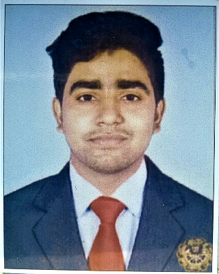

Ward 19 Idgahpada Rajgangpur -770017 | 9861644952
Email- mdarif42010@gmail.com
I am a full stack web developer. I started my career as civil engineer but my passion towards technology drove me towards software development. I have done some interesting projects with the latest technology that are being used in the industry.
Site Engineer Mar 2023 - Present Shivam Condev Pvt Ltd, Bhubaneswar
Project-Rehabilitation and Up-gradation to 4 laning- Making of Rajamunda to Barkote section of NH-23/New NH-143 from Km 287.200 to Km 337.185 in the state of Odisha under NHDP-IV
Role and Responsibility:
INTERNSHIP
Dalmia Bharat Cement Limited, Rajgangpur -2022
Indira Gandhi Institute of Technology, Sarang, Dhenkanal- 9.1 Cgpa
Dalmia Vidya Mandir, Rajgangpur- 85%
Nirmala English School, Rajgangpur- 89%
Html, CSS, JavaScript, Ms-Excel, Ms-Powerpoint, Autocad, Bar Bending Schedule, Labor Management, Problem-Solving Skills, Communication Skills, Teamwork and Collaboration, Safety Compliance, Continuous Learning, Quality Assurance/Quality Control.